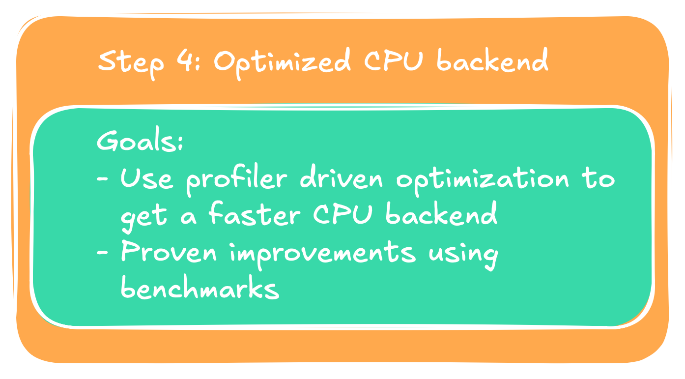

Now we have reached the last post of this initial series. After implementing a full MNIST training pipeline end-to-end in both C++ and CUDA
and giving it a Python binding to be compiled into a Python module, we are ready for our last optimization, the C++ backend optimization.
Because we already walked over the source code this time we can dive right into the optimization work. In the following we will learn about
some CPU-native features, specifically looking at x86-64 (in the following only x64), among other optimization techniques. For everyone not familiar
with x86 I give a small optional primer that will be enough for you to follow this blogpost, given you are familiar with assembly language in general.
About the profiling tools, I personally run Linux, and the
profiling tools of choice are Valgrind and perf. Since Valgrind requires us to set compile flags so that it can hook into the program we
need to recompile every time we want to analyze it with Valgrind, but still want to compare with the actual release version. perf is the simpler
tool for that, so this post will be using it throughout.

Optional: RISC vs. CISC, and where they stand today
For all those who want a refresher on x64 or who haven't had contact yet, this is for you. I assume you are familiar with assembly
code. If you do not know what x86 is, in brief words, back in the days when computers started out there were two philosophies
as to how to design CPUs, known as RISC (Reduced Instruction Set arChitecture) and CISC (Complex Instruction Set arChitecture).
The difference, in my own faul words, is that RISC kept things simple. Instructions are reduced the very ones necessary to perform
the desired operations. CISC on the other hand has more complex instructions. One instruction might fetch data from memory, add an
operand on top, and save the data at a target address. Without digging the whole rabbit hole as what has happened since then, I
still find it interesting to see why that was, and mark the trade-offs clearly.
Let's go a little back in time: Phones had actual buttons to be pressed when dialing a number,
people still knew how to keep a proper conversation and the value of communities, and RAM in computers was in the KB range.
In order to reduce instructions to be held in memory the CISC community designed their CPUs in a way that one instruction
would do more of the work. That meant less instructions and thus more compact code for any compiled and executable program.
This trade-off was to be marked by more instruction decoding logic and wiring on the actual chip. Chips using this kind of
architecture are the ones designed and produced by Intel and AMD.
On the contrary RISC uses less instructions, but each instruction is necessary and serves a clear purpose. Advantages of this
architecture are more ways to optimize nowadays for compilers, since they can shift independent instructions around. That is,
instructions are not necessarily executed in the order you wrote your program in if the compiler determines it found a better
ordering. Another advantage is that the final CPU itself has less need for instruction decoding, and is thus likely to be simpler
and energy efficient (less wires to maintain). RISC architectures are known from ARM (Advanced RISC Machines) and the open-source
RISC-V (say RISC-five) instruction set architecture.